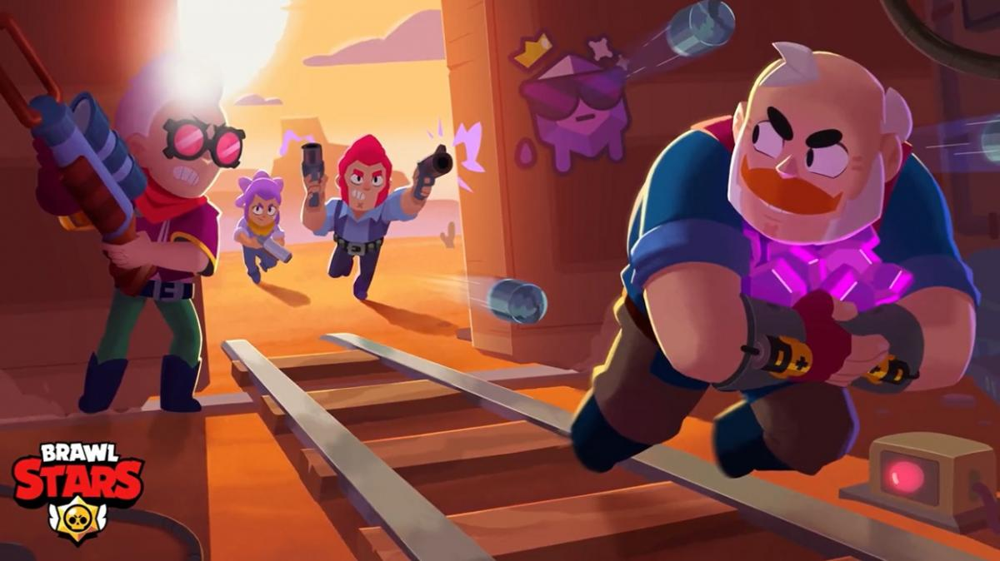
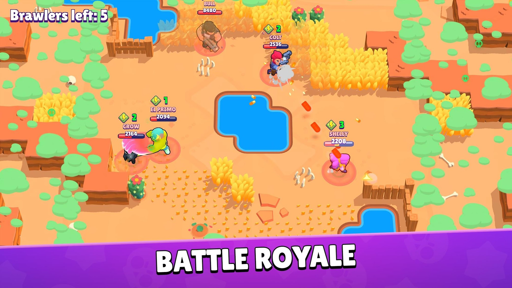
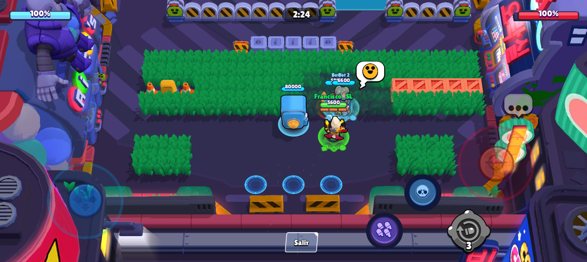
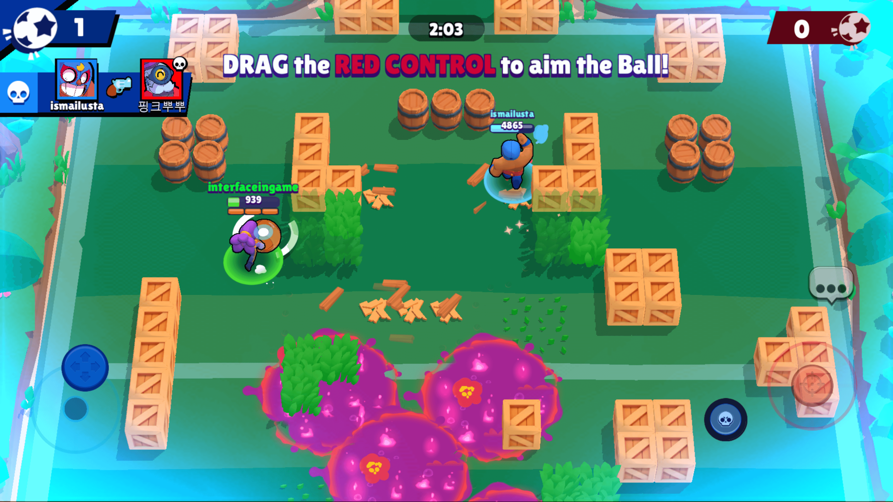

Brawl Stars es un videojuego multijugador para móviles disponible en Android y iOS, desarrollado por Supercell y lanzado globalmente en 2018.
Hay distintos modos de juego. Cuatro de ellos vamos a mostrarlos a continuacíon
|  |
ATRAPAGEMASEl modo "Atrapa Gemas" en Brawl Stars es un emocionante modo de juego en equipo donde dos equipos compiten por recolectar gemas que aparecen en el centro del mapa. Atrapa Gemas es un modo de juego estratégico que requiere trabajo en equipo, coordinación y tácticas sólidas para recolectar y retener gemas mientras se enfrentan a los oponentes. |
SUPERVIVENCIAEl modo "Supervivencia" en Brawl Stars es un modo de juego en el que los jugadores compiten en un mapa grande, recolectando power-ups y eliminando a otros jugadores para ser el último en pie., Supervivencia es un modo de juego intenso y competitivo que requiere estrategia, habilidad de combate y una buena gestión de recursos para sobrevivir y convertirse en el ganador. |
 |
|  |
ATRACOEl modo "Atraco" en Brawl Stars es otro modo de juego por equipos, donde un equipo defiende una caja fuerte mientras que el otro equipo intenta destruirla.Atraco es un modo de juego estratégico que requiere coordinación de equipo y tácticas sólidas tanto en ataque como en defensa para lograr la victoria. |
BALON BRAWLEl modo "Balón Brawl" en Brawl Stars es un emocionante modo de juego en equipo donde dos equipos compiten para llevar un balón al área de gol del equipo contrario. Balón Brawl es un modo de juego rápido que requiere trabajo en equipo, coordinación y estrategia para lograr la victoria. |
|
|  |
David Bacaicoa Gutiérrez
Francisco Sánchez López
Pablo Nicolas Fernandez-Arevalo Olivencia